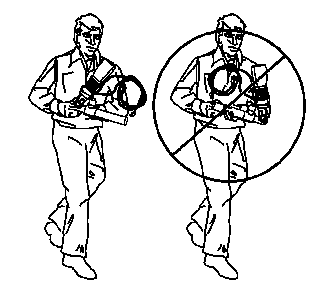
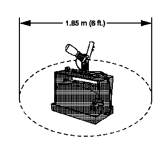
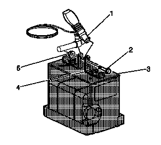
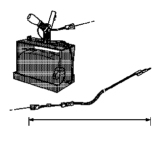
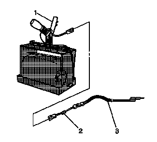
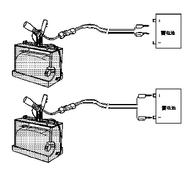

预张紧器的处理和报废
报废程序
在车辆的正常使用期限内，某些情况下可能会必须报废有效（未展开）的预张紧器。以下介绍了报废有效（未展开）的预张紧器的正确程序。在报废之前，要先展开预张紧器。预张紧器展开之前，不要使用常规的处置方法来报废有效（未展开）的预张紧器。以下介绍了报废有效（未展开）的预张紧器的正确程序。
- • 在保修期内更换预张紧器后。预张紧器可能需要在未展开的状态下送回到原制造商处。
- • 如果车辆在安全气囊系统方面是产品可靠性控诉的对象，并接受初步调查 (GM-1241)。不要以任何方式更改安全气囊系统。
- • 如果车辆处于涉及影响预张紧器的返修。请遵循“返修维修通讯”中正确的辅助充气式约束系统处理程序中的指示。
展开程序
注意:在某些国家、州或地区，可能不允许在没有特殊许可或培训的情况下进行安全气囊展开的维修。必须遵守当地法律有关易燃的安全气囊/装置的展开和报废规定。
预张紧器可以在车内或车外展开。所使用的方法取决于对车辆的最终处置方式。参照以下程序，确定在特定情况下哪一种方法最合适。
车内展开
请参见“充气式约束模块的处理和报废”，以便按照“车辆报废程序”展开车辆内部预张紧器。
座椅安全带预张紧器的车外展开
当车辆需要返修时，应在车外对座椅安全带预张紧器进行展开处理。以下情况需要在车外展开：
- • 执行辅助充气式约束系统诊断，已确认座椅安全带预张紧器有故障。
- • 预张紧器引线（如装备）损坏。
- • 预张紧器连接器损坏。
- • 预张紧器连接器端子损坏。
对有故障的座椅安全带预张紧器进行展开和报废处理时，要满足零件保存期限要求。
警告：为了防止预张紧器意外展开，造成人身伤害，请不要按照常规的车间废弃物处理方法来处置未展开的预张紧器。如果在报废过程中密封容器损坏，未展开的预张紧器所含的一些物质可能会导致严重的不适或人身伤害。利用以下展开程序，安全报废未展开的预张紧器。如果未按规定的方法报废预张紧器，可能会违反联邦、州或地方法律。
警告：在展开预张紧器以进行处理时，按照列出的顺序执行展开程序。否则可能会造成人身伤害。
- • EL-39401-B辅助充气式约束系统展开夹具
- • EL-38826辅助充气式约束系统展开线束
专用工具
-
1.将点火开关置于“OFF（关闭）”位置。
- 2.拔出点火钥匙。
- 3.戴上安全眼镜。
- 4.将座椅安全带预张紧器从车辆上拆下。
- 5.将预张紧器移至展开区域时，不要使预张紧器的开口端指向身体。
-
6.在地上清理一块直径大约1.85米（6英尺）的区域，以便预张紧器展开。如果可能，使用铺过路面的户外空地。否则，使用车间的空闲区域。确保通风良好。
- 7.确保该区域没有杂物或易燃品。
- 8.将EL-39401-B辅助充气式约束系统展开夹具置于清理部位的中间。
- 9.向夹具塑料箱中加入水或沙。
-
10.按照以下的安装方法，将预张紧器 (1) 安装到辅助充气式约束系统展开夹具 (3) 上，且开口端朝上。
- 10.1 调节并固定EL-39401-B臂 (4) 至展开夹具 (3)。
- 10.2 安装时，应选择带垫圈且尺寸合适的螺栓 (2) 和螺母 (5)，以将预张紧器 (1) 固定到展开夹具支架 (4) 上。
- 10.3 在展开前拧紧所有紧固件。
-
11.检查EL-38826辅助充气式约束系统展开线束和相应的引线适配器是否损坏。必要时更换。

- 12.将一个香蕉插头插入另一个插头中，以使2条辅助充气式约束系统展开线束 (1) 引线短接。
- 13.将合适的引线适配器 (2) 连接到辅助充气式约束系统展开线束 (1) 上。
-
14.将辅助充气式约束系统展开线束和适配器从展开夹具中完全拉出。
-
15.将预张紧器 (1) 连接至展开线束 (3) 上的适配器 (2)。
-
16.清理在场人员。注意:预张紧器展开时气体迅速膨胀，产生非常大的响声。请通知临近区域的所有人员，您要展开座椅安全带预张紧器。
-
 17.将辅助充气式约束系统展开线束上的2个香蕉插头分开。警告：在展开预张紧器以进行处理时，按照列出的顺序执行展开程序。否则可能会造成人身伤害。
17.将辅助充气式约束系统展开线束上的2个香蕉插头分开。警告：在展开预张紧器以进行处理时，按照列出的顺序执行展开程序。否则可能会造成人身伤害。 -
18.把最低电压为12伏/最小电流为2安的电源（即车辆蓄电池）放在线束短路端的附近。注意:当座椅安全带预张紧器展开时，展开夹具会垂直跳起约30厘米（1英尺）。这是座椅安全带预张紧器的正常反应，是由预张紧器内气体迅速膨胀所产生的作用力而导致的。
- 19.将辅助充气式约束系统的展开线束连接到电源。接触后，预张紧器即会展开。
- 20.在预张紧器展开后，将辅助充气式约束系统的展开线束从电源上断开。
-
21.将一个香蕉插头插入另一个香蕉插头中，使展开线束的引线短接。

- 22.如果预张紧器没有展开，断开适配器并中断展开程序。请与技术支持小组联系。否则按以下步骤继续操作。
- 23.戴上工作手套。
- 24.尽快将引线适配器从预张紧器上断开。
- 25.检查引线适配器和辅助充气式约束系统的展开线束。必要时更换。
- 26.使用常规的废弃物处理方法处置已展开的预张紧器。
- 27.用中性肥皂洗手。